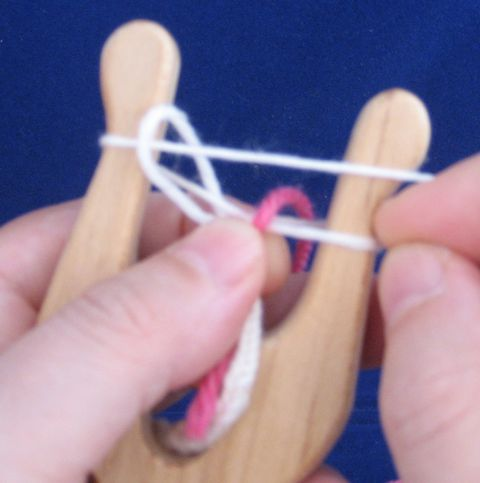
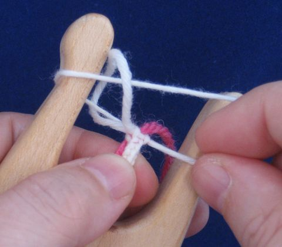
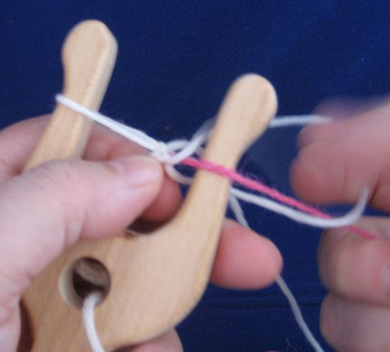
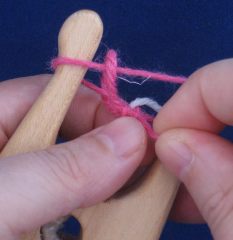

On suositeltavaa pyrkiä siihen, että lankaa on tarpeeksi koko nyöriin. Menekki on noin 10:1 eli kymmenen metriä lankaa tuottaa metrin nyöriä. Joskus kuitenkin käy esimerkiksi niin, että lankakerästä löytyy solmu. Nyörin teko ei silloin onnistu vaan solmu pitää leikata pois ja lankaa pitää jatkaa jotenkin.
Jos lankasi on huopuvaa, voi ns. spit splice olla hyvä tapa jatkaa lankaa. Siitä on suomenkielinen ohje Neulakintaat-sivustolla. Huomaa, että tämä jatkotapa ei sovellu superwash-käsitellylle villalle, koska se ei huovu.
Jos lankasi ei ole huopuvaa, mutta noin sukkalangan vahvuista ja kierteistä, ns. Russian join on kätevä tapa jatkaa lankaa. En löytänyt suomenkielistä ohjetta, mutta Craftsyn ohje sisältää hyvät kuvat, englannintaito ei ole välttämätön.
Langan vaihtaminen kesken nyörinteon
Perusohjeen mukaan tehty nelikulmainen haarukkanyöri on sisältä ontto.
Koska nyöri on ontto, on mahdollista kuljettaa uutta lankaa ensin nyörin sisällä ja sitten vaihtaa lankaa, minkä jälkeen vanhaa lankaa kuljetetaan vähän matkaa nyörin sisällä ennen kuin se katkaistaan. Tällä tavalla saa tehtyä myös leveitä raitoja nyöriin, lepäämässä oleva lanka kulkee nyörin sisällä.
|  | Laita uusi lanka nyörin päälle nyörin ja kerältä tulevan langan väliin. Käännä haarukkaa normaalisti ja vie uusi lanka kulkemaan nyörin takaa. |
|  | Jatka näin muutaman sentin ajan, huolehdi siitä, että uusi lanka jää nyörin sisään. |
|  | Vaihda uuteen lankaan. Vanha lanka jätetään nyörin sisään. |
|  | Jatka muutaman sentin ajan niin, että vanha lanka kulkee nyörin sisällä. Katkaise vanha lanka ja jatka nyöriä normaalisti uudella langalla. |
Olen tehnyt myös pienen videon kahden langan kanssa työskentelystä.
Jos tarvitset hyvin vedonkestävän liitokset, voit myös tehdä nyöriä vähän aikaa kahdella langalla yhtä aikaa. Tällöin jatkoskohta on kuitenkin selvästi paksumpi kuin muu nyöri.